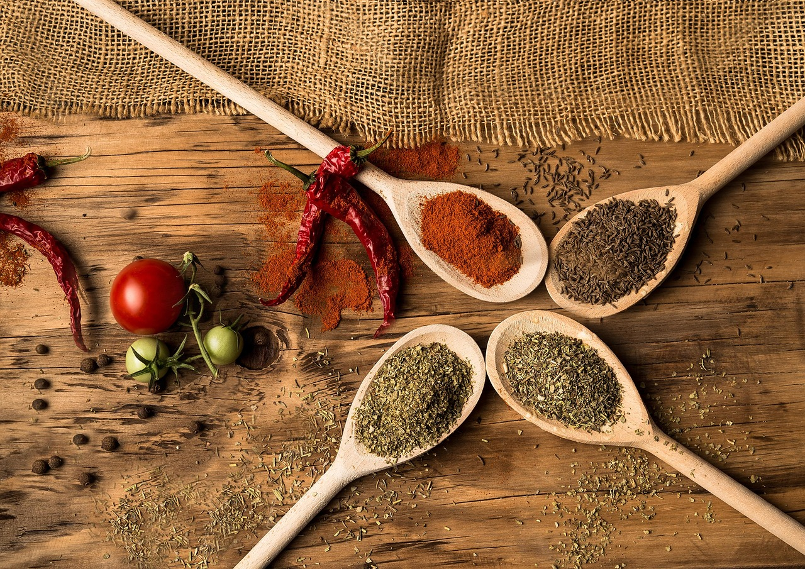
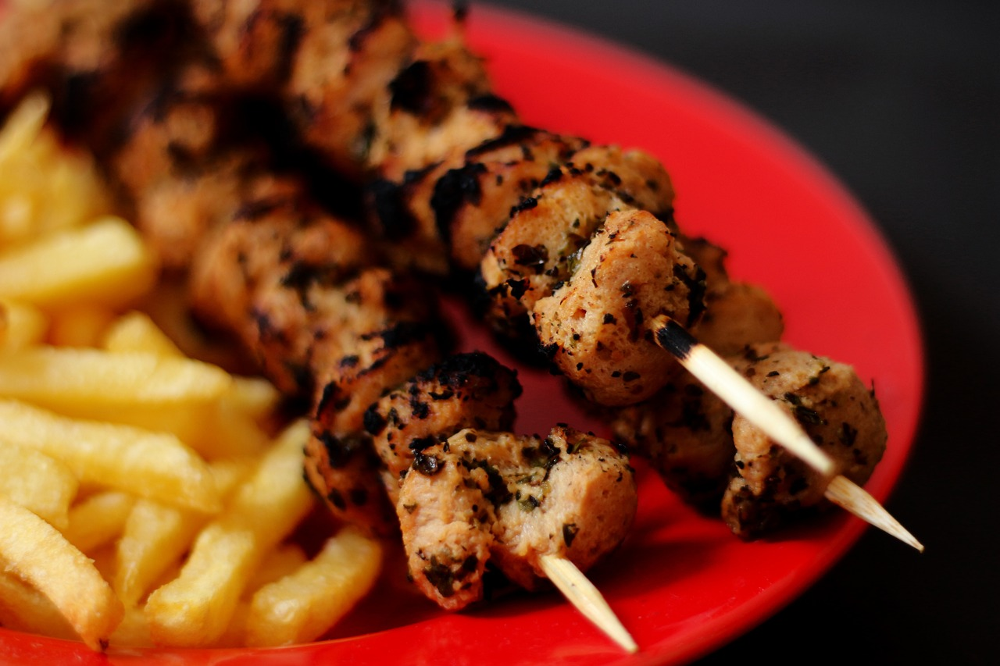

SABORES DA TERRA
A verdadeira essência da culinária regional!
Descubra experiências gastronômicas únicas feitas com ingredientes locais.
Seja muito bem-vindo ao
SABORES DA TERRA
No Sabor da Terra, nossa missão é proporcionar uma experiência gastronômica que celebre a verdadeira essência da culinária brasileira. Situado no coração da cidade, nosso restaurante traz à mesa o melhor dos sabores típicos do Brasil, preparados com ingredientes frescos e de qualidade, respeitando a tradição, mas com um toque contemporâneo.

Aqui, cada prato é uma verdadeira homenagem às riquezas da nossa terra. Trabalhamos com produtos locais, sempre priorizando a sustentabilidade e o apoio aos pequenos produtores. Nossa cozinha é feita com carinho, utilizando receitas autênticas que encantam os paladares e resgatam memórias afetivas de um Brasil cheio de diversidade cultural.

O ambiente do Sabor da Terra é moderno e acolhedor, com uma decoração que mistura elementos rústicos e sofisticados, criando uma atmosfera convidativa para todos. Seja para um jantar em família, uma reunião de amigos ou uma ocasião especial, temos o espaço perfeito para tornar sua refeição ainda mais memorável.